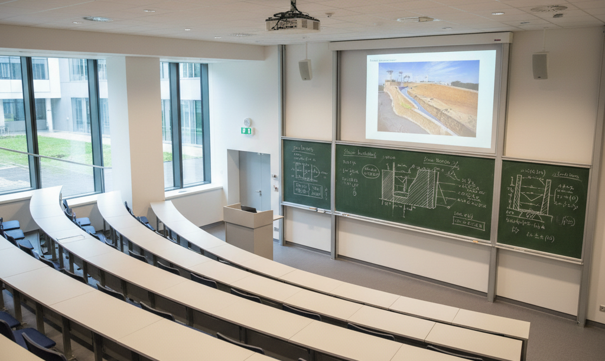

Teaching Area

- Mechanics of Solids (ESO202) at IIT Kanpur (~180 students)(Tutor*;Instructor*)
- Soil Mechanics (CE252) at IIT Kanpur (~160 students)*
- Foundation Design (CE352A) at IIT Kanpur (~150 students)***
- Civil Engineering Communication Skills (CE341A) at IIT Kanpur (~150 students)#
- Civil Engineering Materials (CE242A) at IIT Kanpur (~150 students)
- Applications of Geotechnical Engineering (CE451) at IIT Kanpur (~50 students)*
- Foundation Analysis and Design (CE632A) at IIT Kanpur (~15 students)*
- Geotechnical Measurements and Exploration (CE638A) at IIT Kanpur (~15 students)*
- Rock Mechanics (CE630A) at IIT Kanpur (~120 students)****
- Risk and Reliability in Geotechnical Engineering (CE731A) at IIT Kanpur (~30 students)*
- Basic Geomechanics (CE201) at IISc Bangalore (As Teaching Assistant)
* Rated as excellent instructor (with score > 3.5 out of 4)
# Course is not reviewed by IITK
|